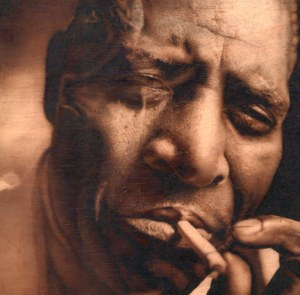
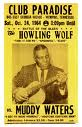
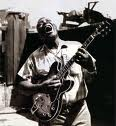

|
 После БиБиКинга и прочих классных ребят с Бил-Стрит никак нельзя было ожидать, что из той же кипучей среды следующая блюзовая звезда явится именно таким персонажем. Им стал Честер Бернетт, Воющий Волк (Howlin' Wolf), бывший в 1929 году учеником Чарли Пэттона на ферме Докери, товарищем в странствиях Роберта Джонсона и Райса Миллера (Санни Боя Уилльямсона II) в середине 30-х, учителем молодых музыкантов, вроде Джонни Шайнза и Флойда Джонсона, но по большей части остававшийся до сих пор фермером, пока он не приехал в Западный Мемфис в 1948 году. Волк родился в июне 1910 года, несколькими годами ранее, чем Мадди Уотерс, Роберт Локвуд и Ханей Бой Эдвардз. И нет ничего удивительного в том, что он оставался традиционалистом. Когда он переселился в Мемфис и в возрасте 38 лет попытался полностью заняться музыкальной карьерой, он все еще исполнял номера Чарли Пэттона и Томми Джонсона, и еще гипнотически-гудящие одноаккордовые песни вроде Smokestuck Lightnin'. Но он купит себе электрогитару и с интересом прислушается к группе своего старого приятеля Райса Миллера, с которой тот выступал по радио. Он решил, что ему нужна группа и собственная передача по радио, которая поможет ему расширить круг известности.Сначала появилась группа. В интервью Питеру Уэлдингу Волк сказал, что первый состав включал в себя гитаристов Уилли Джонсона (Willie Johnson) и Эм-Ти "Мэтта" Мерфи (M.T. "Matt" Murphy). Джуниор Паркер (Junior Parker), тогда еще подросток, играл на губной гармонике; Билл Джонсон по прозвищу "Крах" (Destruction Bill Johnson) - на пиано, и Уилли Стил (Willie Steel) - на ударных. Состав слегка менялся, но в период между 1948 и 1950 годами Волк вылепил самый восхитительный электрический блюзбэнд, какой только видела Дельта. В то время и Мадди, и Джимми Роджерс, и Литл Уолтер тоже ковали свой собственный ансамблевый звук. И звучание ансамбля Вулфа с ними вполне сопоставимо, поскольку все они исполняли подновленную версию традиционного Дельта-блюза. Но на деле Вулф играл одновременно и более традиционный, и более современный блюз, чем группа Мадди. Волк вопил и стенал, как это делали Чарли Пэттон и Сон Хауз, и в неподдельной деревенской манере дул в губную гармонику. Но в его группе солировали "однострунная" гитара Уилли Джонсона с максимальным усилением, и взрывное фортепиано Дистракшина, в котором явно слышались джазовые влияния. В результате проявлялась невероятная, но мощная смесь, которая идеально отражала диалог между традицией и новшеством. Музыку Дельты ждали большие перемены. Волк со своей группой мог звучать безыскусно по-домашнему, особенно когда исполнялись "Пони Блюз" и другие номера Пэттона, но они же могли и свинговать по моде джамп-блюза. Волк ходил то с напыщенным видом, то начинал выть. Уилли Стилл жестоко крушил барабаны. Уилли Джонсон, вывернув ручку усилителя до уровня, когда звук раскалывался, искажался и заводился, разбрасывал дикие аккорды точно по ритму. Группа Волка не знала преград. Еще до начала их передач на KWEM Волк со товарищи уже собирал публику в Арканзасе и Миссиссиппи. Вся группа была несравненной, но главным был Волк, шоумен школы Чарли Пэттона, который и сам выдумал столько же трюков, скольким его научили ранее, и который был готов на все ради того, чтобы довести публику до исступления.  Эдди Шоу (Eddie Shaw), саксофонист из Гринвилля, уехавший из Дельты в 1957 году вместе с группой Мадди Уотерса, и в следующем году присоединившийся к группе Хаулин Вулфа, уверенно заявляет: "У Мадди не было такой энергии, как в Вулфа, никогда - даже в годы его расцвета. Мадди мог раскачать зал преотлично. Но Волк был самым потрясающим блюзовым исполнителем из всех, кого я видел." Это слова преданного почитателя Волка. Во времена 50-х Мадди действительно был мощным исполнителем. Он метался по всей сцене, снова и снова напевая ключевую фразу; его лицо было покрыто потом, глаза закатывались назад… В это время его группа повторяя один аккорд - и вся публика раскачивалась, как в трансе. Однако как бы он не выкладывался, Мадди просто не зашел был так далеко, как обычно заходил Волк. Мадди был супержеребец и "Хучи-Кучи Мэн". Волк был диким животным.В последующие годы, и особенно когда он стал выступать перед преимущественно белой публикой, Волк стал меньше напрягаться. Даже немного прежней свирепости оказывалось достаточно, чтобы разжечь самый изнуренный студенческий зал. Но я никогда не забуду концерт 1965 года, когда Волк выступал в Мемфисе в большой блюзовой программе. Это было еще за несколько лет до того, как "блюзовое возрождение" заставило местных белых обратить внимание на блюз. И пока что в зале нас было трое или четверо белых лиц, державшихся кучкой на первых рядах, на самых дорогих местах. В программе концерта Волк был где-то в середине. Среди других участников были Биг Джо Тернер (Big Joe Turner), Ти-Боун Уокер (T-Bone Walker), хедлайнерами были Джимми Рид (Jimmy Reed) и Литл Милтон (Little Milton). Теперь это может показаться концертом недосягаемой мечты, но в те времена молодые черные отворачивались от блюза, их тянуло к соул, даже на дальнем Юге. И большинство звезд программы, вероятно, были только рады отыграть короткий концертный сет, нежели собирать цепочку клубных выступлений.  Ведущий объявил Волка, занавес открылся, за ним его группа уже выдавала старый добрый домашний шафл. Выбор был сделан неспроста. Другие группы в концерте играли джамп- или соул-блюз, а тут с самого начала все было жестко. Где же Волк? Неожиданно он выпрыгнул на сцену из-за кулис. Это был большой человек, человек-медведь. Но по сцене он передвигался с неожиданной скоростью. Его голова раскачивалась из стороны в сторону. Огромные, сияющие глаза вращались, как у сумасшедшего. Казалось, у него эпилептический припадок! Но нет, Он подтащил к себе микрофон за шнур, выдул из гармоники несколько подчеркнуто ритмичных сырых аккордов и начал стенать. У него был самых громадный голосища из всех, что я слышал - казалось, он переполняет весь зал и заливается тебе в самые уши. Когда он мурлыкал или выл фальцетом, каждая волосинка на твоем затылке пощелкивала от электричества. Тридцатиминутный сет пронесся, как скоростной экспресс. Волк переключался с гармоники на гитару, и обратно. На гитаре он играл и перекатывая ее через спину, и замирая на краешке сцены, и даже прыгая кувырком. Определенно, это был он, Могучий Волк. Наконец, нетерпеливый знак из-за кулис дал ему знать, что его выступление в концерте заканчивается. Волк непокорно отсчитал темп для следующего зубодробительного номера и начал петь ритмично, притворно начал удаляться со сцены, и неожиданно в прыжке полетел к боковому занавесу. Зажав микрофон правой мясистой рукой и не переставая в него петь, он начал взбираться по занавесу, поднимаясь все выше и выше, пока не оказался на самом верху. Казалось, занавес должен порваться. Публика вопила от удовольствия. Тогда он ослабил хватку и, одним легким движением соскользнул вниз по занавесу, встал на пол, закончил песню и удалился величавой походкой, собрав самые горячие аплодисменты вечера. Ему тогда было 55 лет. |